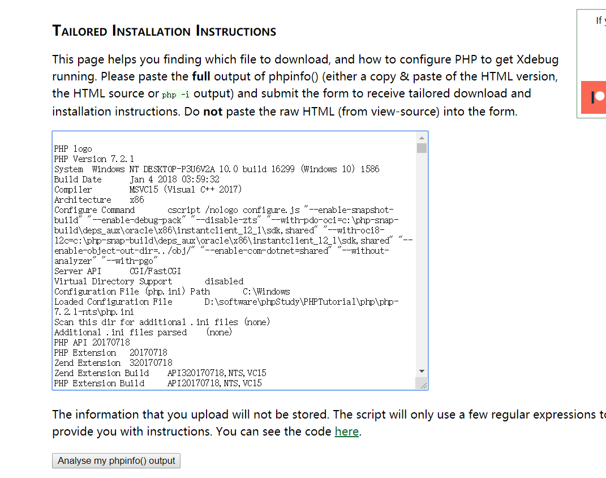
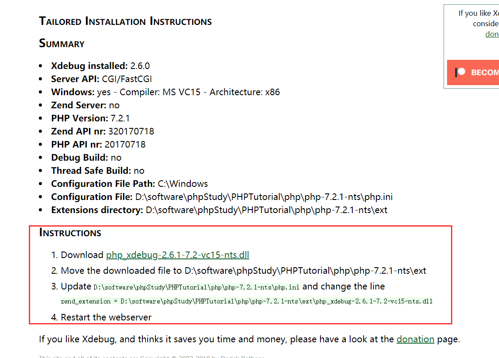
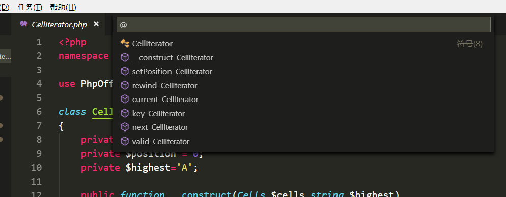
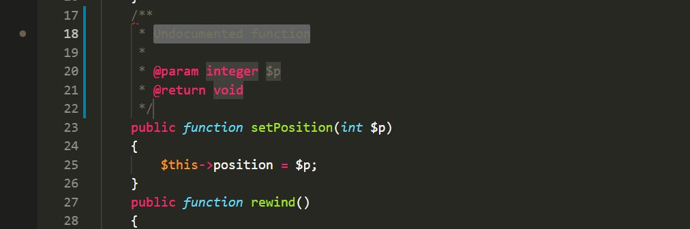

VSCode插件恢复配置记录
在北京，，忽然就蓝屏，暴躁老哥我直接格式化系统盘。。VSCode重装以后回复一波插件，记录一下
PHP Debug
PHP调试用的东西，需要的时候还行，基本配置：https://xdebug.org/wizard.php

使用方式：把phpinfo的内容复制到框框中：

点击分析之后：

按照配置安装即可，php.ini 我的配置，其中带路径的配置，自己调整好。。
1 | [XDebug] |
PHP Symbols
用于定位函数和符号

PHP DocBlocker
自动注释

php cs fixer
用于格式化代码。需要下载 php-cs-fixer 格式化代码美滋滋
Git History Diff
用于查看变化文件